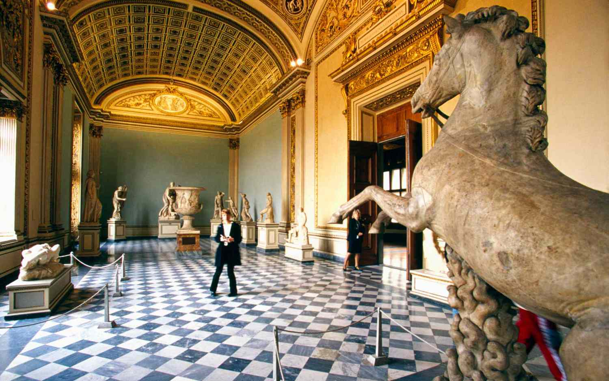

Mission Statement
Monomuse is a contemporary musuem that is focused on exploring the interplay of the various fields of art, technology, and science. Opened in 2019, this musuem features state-of-the-art tecchnology that enhances the experience for visitors of all ages. Our mission is to engage curious visitors in a way that sparks converstaion and an appreciation for the beautiful intersection of these disciplines.
Milestons
- 2019: Monomuse opens its doors to the public, showcasing a diverse range of exhibitions that blend art, technology, and science.
- 2020: The musuem launches an interactive app that allows visitors to explore exhibits in a more immersive way, providing additional information and multimedia content.
- 2021: Monomuse hosts its first annual "Tech-Art Festival," featuring installations and performances that highlight the creative potential of technology in art.
- 2024: The musuem expands its collection to include more works that explore the relationship between art and artificial intelligence, sparking new conversations about creativity and technology.